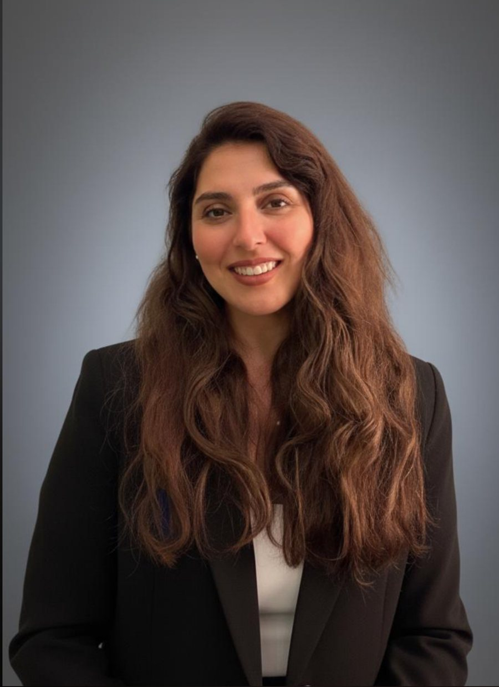

Photo: Reading room, Bibliothèque Sainte-Geneviève, Paris · Marie-Lan Nguyen · CC BY 2.0 FR, cropped, via Wikimedia Commons
Katayoun Matloubi, PhD

Part-Time Faculty, HistoryWashtenaw Community College
Research Associate, Inclusive History ProjectUniversity of Michigan–Dearborn
Research AssociateHadassah-Brandeis Institute, Brandeis University
کتایون مطلوبی
I am Part-Time Faculty in History at Washtenaw Community College and a Research Associate with the Inclusive History Project at the University of Michigan–Dearborn. I am also a Research Associate at the Hadassah-Brandeis Institute, Brandeis University. I received my Ph.D. in Contemporary French Literature and Francophone Studies from the University of Connecticut in 2025, together with a Graduate Certificate in Human Rights.
My research examines indirect forms of Holocaust representation: the place of silence and absence in literature and film, the history of Iran’s Jews and the refugees who passed through Iran, and how testimony changes as it moves between languages. My book manuscript, The Rhetoric of Obliquity: Anna Langfus, Holocaust Cinema, and the Ethics of Indirection, reads the Polish-Jewish survivor and Prix Goncourt laureate Anna Langfus as both the inventor of a literary obliquity and its first serious critic, and follows the problems she formalized into film, from Resnais and Lanzmann to Pawlikowski, Nemes and Glazer.
I bring French- and Persian-language research, translation, oral-history methods and museum education to questions of Jewish testimony and belonging. My article “The Persistence of the Void: Formal Absence in Holocaust Representation from Langfus to Ida” appeared in Holocaust Studies in 2026, and my work has been supported by the United States Holocaust Memorial Museum, the USC Shoah Foundation, the Hadassah-Brandeis Institute and the Trans-Atlantic Summer Institute at the University of Minnesota. I work across Azeri, Persian, French, English and Ottoman Turkish, and read Arabic.
Three questions, one method

Holocaust representation and memory
Silence, absence and indirection in French-language literature and in Holocaust cinema, from Anna Langfus to The Zone of Interest.
Read more
Iranian Jewish history
Iran’s Jews and the refugees who passed through Iran, and an Iranian Jewish student classified by Vichy France, 1941–1944.
Read more
Multilingual testimony and translation
How testimony changes between Persian, French and English, and what human and machine translation can quietly resolve or lose.
Read moreImages via Wikimedia Commons: Wall of Names, Mémorial de la Shoah (Ninaraas, CC BY 4.0) · Tomb of Esther and Mordechai, Hamadan (Adam Jones, CC BY-SA 2.0) · Florence Shahnameh, 1217 (public domain). Cropped.
Holocaust Studies
The Persistence of the Void: Formal Absence in Holocaust Representation from Langfus to Ida
Argues against the assumption that formal absence is inherently ethical in Holocaust representation. The article reads Langfus, Shoah, Son of Saul and Ida asymmetrically, as a genealogy of mediation.
Revised version of “Knowing Non-Knowledge” submitted to Memory Studies.
“The Persistence of the Void” published online in Holocaust Studies, open access.
Teaching HST 109, The Early Modern World, at Washtenaw Community College.
Gelman International Research Workshop at the United States Holocaust Memorial Museum, with research in the Shapell Center Reading Room.
United States Holocaust Memorial MuseumHadassah-Brandeis InstituteUSC Shoah FoundationTrans-Atlantic Summer Institute, University of MinnesotaDodd Center for Human Rights